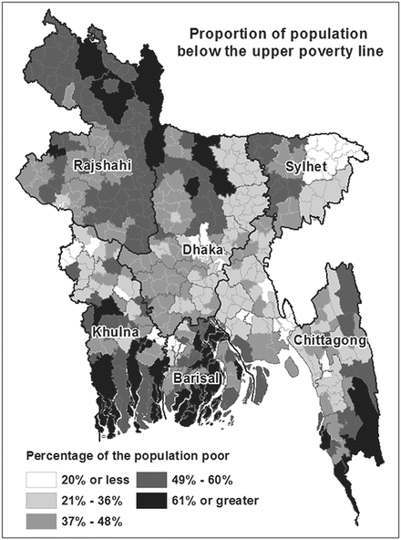
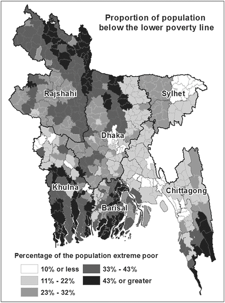
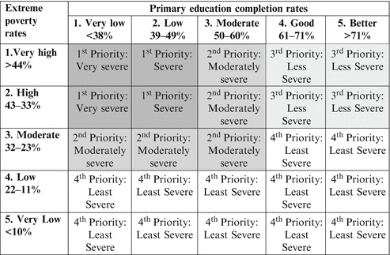
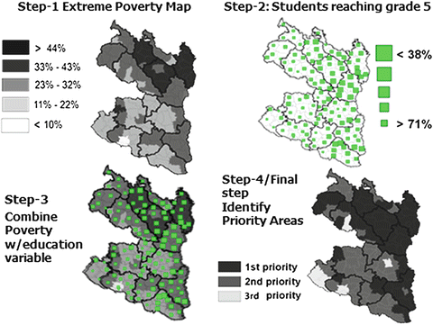
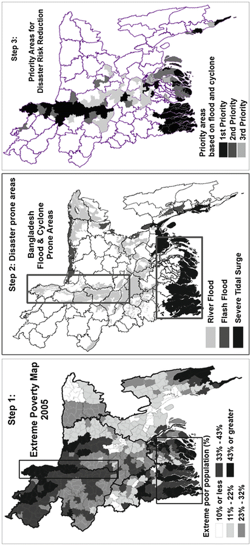
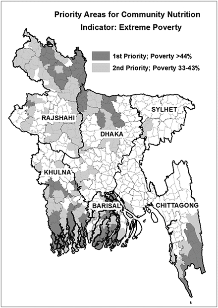
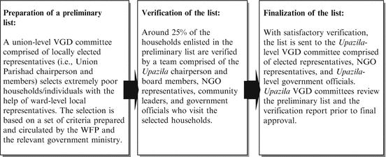
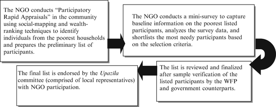

7.1 Introduction: Why Targeting?
The identification of the poorest and most vulnerable is primarily linked to how we define and characterize them. In Bangladesh most definitions of poverty incorporate income, expenditures, and food consumption dimensions. The Household Income and Expenditure Survey (HIES) conducted by the Bangladesh Bureau of Statistics (BBS) defines poverty by the Cost of Basic Needs (CBN) and Direct Calorie Intake (DCI) methods. The CBN defines poverty based on per capita expenditures on basic food and nonfood items, and differentiates between the poor and extremely poor using upper and lower poverty lines.1 The DCI defines poverty and extreme poverty based on daily per capita food consumption below 2,122 and 1,805 kcal respectively. In the measurement of poverty, diet is an important element, hence both methods have a certain degree of overlap.
Over the past decade Bangladesh has achieved significant reductions in poverty as measured by the CBN and DCI methods. In this paper we focus on the CBN method of poverty measurement because it is widely preferred over the DCI method (BBS 2003). Based on the CBN method, the prevalence of poverty was as high as 57 % at the beginning of the 1990s, declined to 50 % in 2000 and to 40 % in 2005. Subsequent estimates from BBS in 2010 revealed that poverty had declined even further to 32 %. The prevalence of extreme poverty was also reduced from 34 % in 2000 to 25 % in 2005. Despite reductions in the prevalence of poverty the absolute number of poor and marginalized remains high due to population size. Out of a population of 128 million in 2000, 64 million were poor and 44 million were extremely poor. By 2005 the population of Bangladesh had grown to 140 million population, of which the poor and extremely poor accounted for 56 and 35 million respectively.
In addition to the large number of poor, geographical variation in per capita poverty measurement and the severity of poverty are also concerns. The eastern regions of Bangladesh have increasingly benefited from integration with major urban centers, namely Dhaka and Chittagong, in contrast to the more isolated west and southwest, which are economically lagging and where poverty levels are higher. This disparity raises questions about the values of a regional versus a nationwide focus of poverty reduction initiatives.
In poverty reduction efforts the targeting choice between poor versus extremely poor presents another challenge to the design of programs and their implementation strategies. In the recent past most of Bangladesh’s national policies, as well as mainstream development programs, addressed poverty, whereas extreme poverty received more focus from international development partners. In Bangladesh extreme poverty and marginality not only denote a lack of income, but are also strongly linked to increased exposure to risk of natural and economic shocks, limited or no access to social and economic entitlements, and exclusion from mainstream development activities.
While the national government of Bangladesh and its development partners have prioritized poverty on their agenda, limited availability of resources to address the 40–60 million people living in poverty remains a daunting challenge. In poverty and vulnerability reduction efforts the effective utilization of limited resources is a key challenge for development practitioners, especially when choices have to be made and criteria for prioritization need to be defined. This challenge leads to three major questions: Who are the most vulnerable? Why are they vulnerable? Where do they live? It is here where targeting and the prioritization of areas and beneficiaries become necessary for the implementation of effective and efficient safety net programs.
7.2 Geographic Targeting
When resources are limited, or issues and problems have regional dimensions, geographic targeting is the most efficient way to allocate resources. With geographic targeting, eligibility for benefits is first and foremost determined by location. Poverty maps can be used to focus programs in areas of the country or to allocate resources by subnational jurisdictions.
In Bangladesh the United Nations World Food Programme (WFP) initiated the spatial targeting of programs during the 1980s. In the beginning resource allocation maps were produced for the Vulnerable Group Development (VGD) program. These maps were partly based on perceptions of poverty and partly on indicators associated with poverty. Later with the availability of poverty maps in 2004 the targeting of programs became more robust by incorporating data from surveys and censuses.
7.3 Mapping of the Poorest and Most Vulnerable
Programs to alleviate poverty and hunger are most effective when they provide assistance in areas where the poorest reside and where socio-economic development lags behind. In the past the ability to identify lagging areas was limited. Geographic targeting became a popular approach for resource allocation and decision making with the development of appropriate analytical and statistical methods, and the availability of information on poverty and hunger indicators.
Poverty mapping is an exercise to estimate poverty prevalence at a level where a typical household income and expenditure survey cannot produce statistically reliable poverty estimates due to high sampling errors. In Bangladesh official poverty rates are not estimated below the division level.2 Various poverty mapping methods were devised to disaggregate the higher administrative level poverty data to a lower administrative or geographic level, and to overcome the increasing imprecision of poverty estimates arising from the disaggregation. The Small Area Estimation (SAE) poverty mapping method developed by Elbers et al. (2003), has been widely tested and validated throughout the world as the most efficient for mapping poverty. One advantage of this method is that in addition to estimating poverty prevalence it also estimates the expected standard error as well.
With technical support from Massey University in New Zealand, the BBS and the WFP produced absolute poverty and extreme poverty maps for 2001 at the Upazila (sub-district or county) level based on the SAE method using a 5 % sample from the 2001 Population Census3 (BBS 2001) and the 2000 HIES (BBS 2003).4 The method takes advantage of the strengths of both sources. In the case of the HIES data, its strength is that direct measures of poverty (i.e., income and expenditure data) are available. In the case of the census data its strength is associated with its scale; data was collected from every household in the country as opposed to being a sub-sample of a larger population.
Both maps became outdated. With the publication of the 2005 HIES data (BBS 2007) there was growing demand for upgraded poverty maps. In response to this demand the BBS, the World Bank, and the WFP produced Upazila-level poverty maps for 2005 using the 2001 census and the 2005 HIES datasets (BBS et al. 2009a, b, 2011). The 2004 Population Sample Census, which was representative at the district level, was also used to validate the findings of the poverty-mapping exercise (BBS 2005; Fig. 7.1).

Fig. 7.1
Bangladesh poverty map 2005 (BBS/WB/WFP 2009a)
The poverty map and extreme poverty map are useful for different purposes. One possible application of the extreme poverty map would be for the prioritization of areas identified with a high prevalence of ‘extreme poverty’ in terms of resource allocations. Areas with a higher prevalence of extreme poverty are also areas where vulnerability, deprivation, and food insecurity are likely to be more severe, therefore planning interventions to address the worst situations might benefit more from consideration of the extreme poverty map as opposed to the poverty map (Fig. 7.2).

Fig. 7.2
Bangladesh extreme poverty map 2005 (BBS/WB/WFP 2009b)
7.4 Utilization of Poverty Maps for Prioritizing Areas for Social Safety Nets
The key focus of WFP’s safety net and development programs are the extremely poor. The WFP in Bangladesh is a pioneer in the use of poverty mapping tools for geographic targeting and resource allocation, both for its own efforts as well as for governmental social safety net programs. The major preventative social safety net efforts that the WFP operates in Bangladesh are ‘school feeding,’ ‘community nutrition,’ VGD,5 and ‘disaster risk reduction’ programs. In addition to these regular programs, the WFP also implements natural disaster relief and recovery programs.
Through its school feeding program the WFP provides micronutrient fortified biscuits to primary school students. The program goals are to increase class attendance and reduce micronutrient deficiencies among school children. The program is operational in selected Upazilas that have high-levels of extreme poverty and poor performance on education indicators.
The VGD program is a nationwide safety net that is now exclusively operated by the Ministry of Women and Children’s Affairs, with technical and facilitation support from the WFP. All VGD program participants are women from the poorest households. The major entitlement of this program is food, which is complemented with training on income generating activities and nutrition. Due to limited resources, a certain number of extremely poor households are selected from each Upazila as beneficiary households and these numbers are determined using the extreme poverty map.
The community nutrition program provides a package of services to certain groups that are vulnerable to nutrient deficiencies. In particular the program targets moderately undernourished children aged 6–59 months and pregnant and lactating women, from areas with a high prevalence of poverty. To enhance the effectiveness of the community nutrition program it is integrated with other social safety net programs.
The WFP disaster risk reduction program enhances community resilience to different types of natural disasters and the effects of climate change, while strengthening household food security. To do this, community infrastructure such as roads, embankments, and flood and cyclone shelters are built and maintained. These interventions are mostly targeted in disaster-prone areas with a high prevalence of extreme poverty.
7.5 Geographic Targeting: Prioritizing Assistance Areas for the School Feeding, Community Nutrition, and Disaster Risk Reduction Programs
Bangladesh has been quite successful in increasing primary school enrollment, however, achieving quality universal primary education by 2015 remains a challenge due to irregular attendance, low primary school completion levels, and the poor quality of education. Both the government and NGOs, including the WFP, are working to improve enrollment and attendance in primary education through various interventions. In this context the WFP attempts to prioritize areas for the school feeding program based on primary education outcomes and poverty prevalence.
Areas were prioritized for the school feeding program based on two indicators: the percentage of primary school students reaching grade five (DPE 2008) and the prevalence of extreme poverty (BBS et al. 2009b). Both indicators were divided into five categories with specific thresholds. The thresholds were determined by applying a Geographic Information System (GIS) based data classification technique called ‘natural break.’ Upazilas with greater than 33 % poverty levels and primary education completion of less than 49 % were identified as top priority areas for the school feeding program. Upazilas with 32–23 % poverty levels and 50–60 % primary education completion were given second priority. In Fig. 7.3 is a summary of the method of geographic prioritization for the school feeding program, followed by an illustration (Fig. 7.4) of the prioritization process for the school feeding program as guided by the matrix. For the sake of clarity only the scenarios for the Rajshahi and Rangpur divisions in the northwest of Bangladesh have been presented here.

Fig. 7.3
Area prioritization matrix for the WFP school Feeding program (WFP 2011a)

Fig. 7.4
Area prioritization for the school feeding program in the divisions of Rajshahi and Rangpur (WFP 2011b)
Using similar methods, area prioritization was determined for two other WFP safety net efforts, the ‘disaster risk reduction’ and ‘community nutrition’ programs. The cut-off values that were used to classify poverty estimates and other indicators were also determined using the GIS ‘natural break’ data classification system. The thresholds may vary depending on the scenario (i.e., the highest and lowest values in the database).
Geographic prioritization for the disaster risk reduction program was based on two indicators, the prevalence of extreme poverty and vulnerability to flooding and cyclones. This second indicator was derived from historical data. The final results from the analysis showed that high-priority areas for disaster risk reduction activities were along the major rivers and coastal region. During the analysis it was observed that areas prone to severe disasters also had a very high prevalence of absolute and extreme poverty, indicating a strong association between natural disasters and poverty (Figs. 7.5 and 7.6).

Fig. 7.5
Prioritization of areas for the disaster risk reduction program (WFP 2011c)

Fig. 7.6
Priority areas for the community nutrition program (WFP 2011d)
Due to the absence of Upazila-level nutrition or diet information the targeting for the community nutrition program was based only on the extreme poverty map due to the strong linkage between poverty and malnutrition. To more clearly observe the impacts of the program it was decided not to implement the program in areas where the government-operated National Nutrition Programme was being implemented.
Because the WFP works with limited resources, most programs are implemented in top priority areas only. Often even more selective prioritization becomes essential due to funding shortfalls, however, the WFP advocates for the other priority areas to donors and development partners. Recently the Ministry of Primary and Mass Education utilized the WFP school feeding priority map in order to plan the implementation of their own program, ‘School Feeding in Poverty-prone Areas,’ in the remaining high-priority areas where the WFP programs were unable to operate.
7.5.1 Resource Allocation for National Safety Net Programs Guided by Poverty Estimations
The extreme poverty map has been used extensively by the WFP and the Government of Bangladesh to plan resource allocation for nationwide safety-net efforts like the VGD and ‘100-Days Employment Generation’ programs. In such programs area prioritization was not an issue and all Upazilas were entitled to benefits, however, the number of extreme poor selected from within each Upazila for program entitlements was a major concern. The extreme poverty map provided a neutral basis for determining the total beneficiary numbers, where the numbers were proportional to the per capita rates of extreme poverty in each Upazila. For instance, in the VGD program there were 750,000 households nationwide that were entitled to benefits. Based on poverty estimates, Upazilas where extreme poverty levels were higher had a larger number of beneficiary households selected.
7.5.2 Advantages and Limitations of Geographic Targeting
There are many advantages to geographic targeting: it is administratively simple, there is no bias in the selection of areas, political compromises may be avoided, and the most appropriate areas can be selected. One disadvantage of geographic targeting is that it will perform poorly as a prioritization method when poverty or the desired target population is not spatially concentrated. Performance also depends on the accuracy of the map, a concern that is becoming less relevant over time as the small-area estimation technique has advanced in its sophistication and application. The poverty and extreme poverty maps only geographically target vulnerable areas, leaving marginal populations living in less poverty-prone areas without social program entitlements.
7.6 Beneficiary Targeting: Identification of the Poorest and Most Vulnerable in the WFP Safety Net Programs
Geographic targeting only identifies areas where assistance is needed. It provides little insight into the characteristics of the beneficiaries for whom the social safety nets are intended. Therefore geographic targeting is followed by beneficiary targeting.
7.6.1 Criteria Used to Target the Poorest and Most Vulnerable
The WFP safety-net programs target the poorest most food insecure households, as well as nutritionally vulnerable social groups such as children under the age of 5, and pregnant and lactating women. WFP usually provides food and cash assistance to poor, food insecure households, while nutritionally vulnerable groups receive nutritious or fortified food combined with nutrition training. In protective and promotional safety-net programs, the food or cash entitlements are usually transferred to one individual per household, but the entitlement benefits are shared among all household members. Certain generic criteria are used by the WFP and other stakeholders to identify the poorest and most food insecure households. The selection criteria are usually applied in combination and are conditional, for example a household should meet three out of five of the following criteria:
- Land ownership of less than 0.06 ha
- Female-headed households (widowed, separated, divorced, or with disabled husband)
- Extremely-low and/or irregular household income from day or casual labor and virtually no productive assets
- Household members affected by chronic food shortages (i.e., who often skip meals due to insufficient food)
- Poor housing conditions (low quality construction materials, sanitation facilities, and household goods).
In addition to these conditional criteria, some mandatory selection criteria are also considered during the selection of beneficiaries. The most commonly used mandatory criteria are:
- Household members do not benefit from other social safety-net programs
- The selected participant must be 18–49 years of age and physically able to participate in program activities
7.6.2 Beneficiary Selection Process
The selection of the poorest and most vulnerable households and individuals based on the criteria is either performed by local government, or by NGOs and the communities. In both cases the WFP oversees the selection process. The two illustrations summarize the selection process for program beneficiaries in social safety nets that address food security (Figs. 7.7 and 7.8).

Fig. 7.7
Selection of the poorest and most vulnerable households by local government in the joint WFP-government partnership program VGD (WFP 2009)

Fig. 7.8
Selection of participants from the poorest households by NGO partners in a joint WFP-government partnership Disaster Risk Reduction program (WFP 2007)
The identification of nutritionally vulnerable individuals by the WFP community nutrition program follows a different process. This program is entirely operated by the WFP and NGOs without government involvement. The NGOs initially select female volunteers called village nutrition promoters from communities and train them to select beneficiaries. The village nutrition promoters then select undernourished children under age 5 and pregnant and lactating women from the communities through a screening process. The NGOs conduct sample verification of the initially selected beneficiaries and finalize the list.
7.6.3 Limitations and Challenges in Targeting the Poorest and Most Vulnerable
Properly targeting the poorest and neediest is an essential requirement for social safety nets to function effectively. A World Bank (2006) study reported that 27 % of the VGD beneficiaries and 47 % of the Primary Education Stipend6 Programme beneficiaries in Bangladesh were not poor. An evaluation of the government operated Employment Generation Programme that ostensibly targeted the poor also found that one-third of the program participants were from middle-income families (MoFDM 2009).
The exclusion of individuals who are most in need of social safety nets due to resource constraints is unavoidable. However, providing benefits to people who do not belong to the intended target population (inclusion and exclusion errors) is a key concern for all stakeholders. The major reasons for inclusion and exclusion errors in beneficiary selection are as follows:
- Political influence, social and personal biases lead to the inclusion of unintended beneficiaries.
- A general set of selection criteria applied throughout the country may leave out area-specific characteristics of poverty.
- Some of the beneficiary selection criteria are debatable on the ground of exclusion. For instance certain safety net programs that target reproductive or working age women do not consider participants over 49 years of age. This could prevent vulnerable women beyond this age who are mentally and physically fit from participating in social safety nets. Alternatively physical fitness could be substituted for age criteria.
The involvement of local governments can enhance government proprietorship in the implementation of the program, though it also presents many risks: favoritism, bias towards the better-off, and the denial of benefits to the neediest community members. Such a system bears the risk of exacerbating and perpetuating existing patterns of social exclusion. Monitoring of the selection by an unbiased third party may reduce inclusion errors to some extent. Moreover sensitizing local communities to the selection procedures may create greater local awareness of selection anomalies.
Community-based targeting often uses a group of community members who are not eligible for the transfer programs to decide who in the community should benefit. The mere presence of influential members of the community during the selection process can influence the choices. In general, community-based targeting has more advantages than drawbacks. It relies on local information about individual circumstances, which is generally more accurate than information available from any other method. This approach also introduces local definitions of need and welfare. Hence community-based targeting tends to be most appropriate where local communities are well-established and cohesive.
The targeting mechanisms described here are applicable to, and have been practiced in rural situations. In the design of interventions for urban poor living in slums both geographic and beneficiary targeting are complex. Targeting urban populations entails additional challenges such as the lack of information on slum conditions and residents, the frequent shifting of slum households, and the diversified livelihoods of the urban poor, etc. Currently development partners working for the urban poor in Bangladesh have developed various targeting mechanisms that need to be consolidated and strengthened.
7.7 Conclusion
The concepts of identifying the poorest areas and the poorest and most vulnerable populations are gaining popularity among development practitioners, despite criticisms of the spatial restriction of social safety net programs to certain areas. The process of targeting the poorest areas and individuals still lacks rigor, especially in government operated social safety nets, diminishing the efficiency and effectiveness of programs. Technical expertise on the utilization of poverty maps in Asia at this point is still largely confined to the WFP. Such capacities need to be transferred to governmental and non-governmental counterparts in order to help improve targeting mechanisms on broader levels. Defining and articulating the targeting criteria and process to the public provides transparency and accountability, which are essential for reducing the chances of misappropriation of social safety net benefits.
References
BBS (2001) Population census report 2001. Bangladesh Bureau of Statistics, Dhaka
BBS (2003) Report of the household income and expenditure survey 2000. Bangladesh Bureau of Statistics, Dhaka
BBS (2005) Population sample census 2004. Bangladesh Bureau of Statistics, Dhaka
BBS (2007) Report of the household income and expenditure survey 2005. Bangladesh Bureau of Statistics, Dhaka
BBS/WB/WFP (2009a) Bangladesh poverty map 2005. Bangladesh Bureau of Statistics/World Bank/World Food Programme, Dhaka/Washington, DC
BBS/WB/WFP (2009b) Bangladesh extreme poverty map 2005. Bangladesh Bureau of Statistics/World Bank/World Food Programme, Dhaka/Washington, DC
BBS/WB/WFP (2011) Updating poverty maps: Bangladesh poverty maps for 2005. Bangladesh Bureau of Statistics/World Bank/World Food Programme, Dhaka/Washington, DC
DPE (2008) Primary education survey 2008. Bangladesh Ministry of Mass and Primary Education, Directorate of Primary Education, Dhaka
Elbers C, Lanjouw JO, Lanjouw P (2003) Micro-level estimation of poverty and inequality. Econometrica 71(1):355–364CrossRef
MoFDM (2009) 100 Days employment generation program, implementation guideline 2009. Bangladesh Ministry of Food and Disaster Management, Dhaka
WFP (2007) Operational guidelines for the planning and implementation of the World Food Programme—assisted enhancing resilience component of the Country Programme for Bangladesh 10410.0 (2007–2011). World Food Programme, Dhaka
WFP (2009) Vulnerable group development programme implementation guideline. World Food Programme, Dhaka
WFP (2011a) Technical note on prioritizing upazilas for school feeding programme. World Food Programme, Dhaka
WFP (2011b) Priority area map for school feeding programme. World Food Programme, Dhaka
WFP (2011c) Priority area map for enhancing resilience programme. World Food Programme, Dhaka
WFP (2011d) Priority area map for community nutrition programme. World Food Programme, Dhaka
World Bank (2006) Social safety nets in Bangladesh: an assessment. Bangladesh Development series no 9. World Bank, Washington, DC
Footnotes
1
The upper poverty line corresponds to households in absolute poverty whose food consumption expenditures are at or below the food poverty line (based on the cost of a basic diet that provides 2,122 kcal/person a day). The lower poverty line corresponds to households in extreme poverty whose total expenditures are equal to the food poverty line.
2
Divisions are the largest geopolitical administrative unit in Bangladesh, followed in diminishing scale by districts, sub-districts or Upazilas, and unions. There are seven divisions, 64 districts, over 500 Upazilas, and over 4,000 unions in Bangladesh.
3
During the poverty mapping exercise, the complete Population Census 2001 data (BBS 2001) was not available therefore a 5 % sample from the census was used. Later after the complete census data became available the 5 % sample data was verified and no significant variation was found between the two.
4
The International Rice Research Institute also produced a rural poverty map using the 2001 Population Census data and the 2000 HIES data.
5
The WFP operated the VGD program until the end of 2010 and in 2011 transferred program operations entirely to the government.
6
The Primary Education Stipend Programme is a state-run social safety net for primary school students from poor households who achieve satisfactory exam results and regularly attend school.